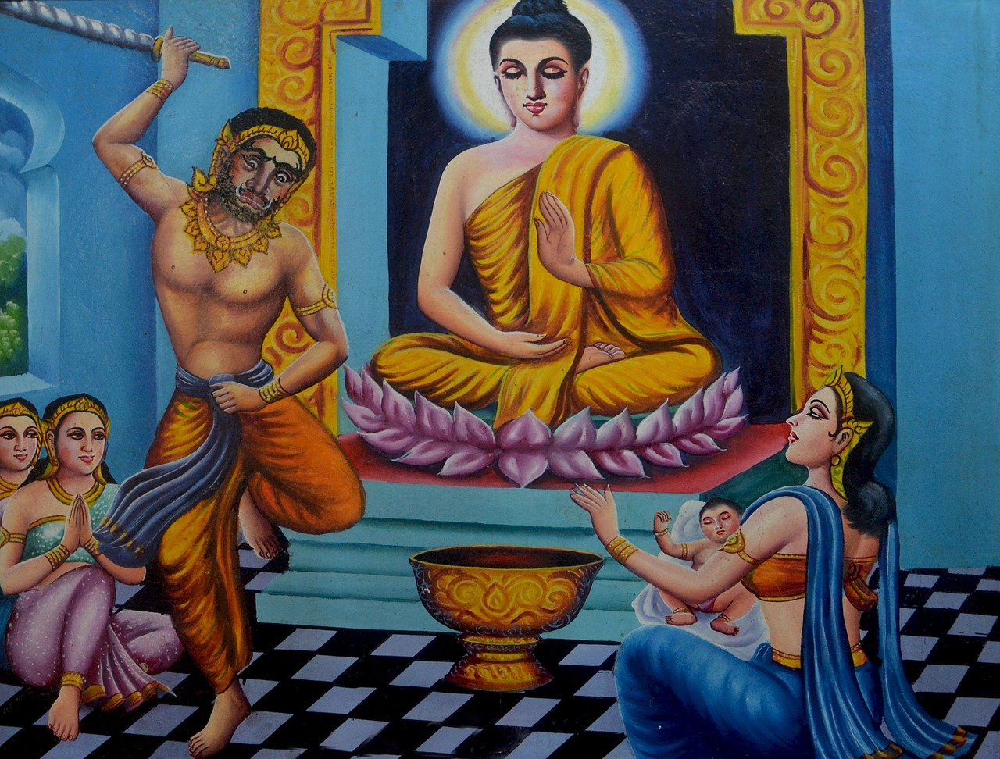

阿闍世王造五逆十惡罪
淨空法師
佛教導我們，縱然此人作惡多端，也不能輕視他。為什麼？
譬如《觀無量壽佛經》所說的阿闍世王，提婆達多誘惑他，說他的父親年歲那麼大，還不傳位給他，還佔著王位，叫他最好把父親害死，早一天繼承王位。
阿闍世王真的聽了他的誘惑，把父親害死，把母親幽禁，這就是現在講的太子發動政變。
提婆達多想害釋迦牟尼佛，所以他們兩人商量好，一個作新國王，一個作新佛，新國王護持新佛，這是造五逆十惡罪。
佛在經上告訴我們，提婆達多生身墮地獄，真的看到大地像地震一樣裂開了，地裡面火光上升，提婆達多掉下去，這是現世果報。
而阿闍世王臨終懺悔，那是真心悔過，念佛求生西方極樂世界。
《阿闍世王經》講，他生到西方極樂世界，是上品中生。我那時看到這段經文很驚訝，他造這麼重的罪，如果佛說他是下品下生，我不會疑惑，但是說上品中生，我感到非常驚訝。
後來仔細思惟才知道，往生是兩種方式，一種是平常修行，積功累德往生的；一種是造作罪業，臨終懺悔，所以懺悔的力量不可思議！